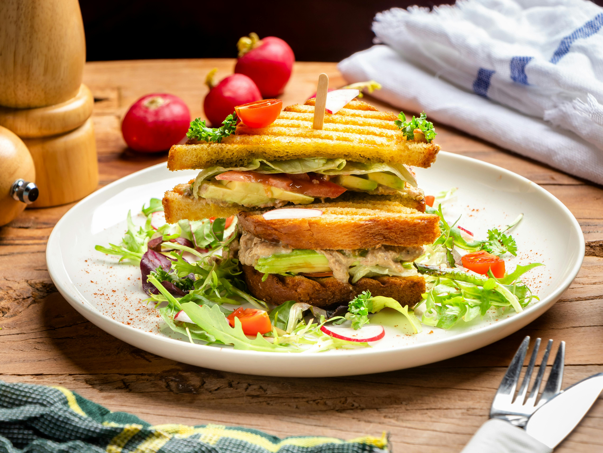

Tuna Sandwich
Home

Description
Quick and easy tuna sandwich recipe that tastes amazing especially on a summer day for lunch!
This one is great to pack and go or sit at home while watching television with a glass of lemonade as well as some chips.
- 1/4 of a red onion
- 1 can of lightly flaked wild-caught tuna
- 1/4 tablespoon of butter
- tablespoon of lemon & garlic aioli
- 2 stalks of green onion
- 1/4 of a bell green pepper
- 1/4 of a bell red pepper
- 1/4 of a field tomato
- Four slices of sourdough bread
Steps
- Dice onions, peppers, and tomatoes
- Heat a skillet with butter
- Fry the onions, peppers, and tomatoes until they're sauteed
- Fry the tuna into the vegetables
- Add aioli into the skillet
- Preheat oven to 350 degrees
- Pan-finish the tuna and vegetables in the oven
- Layer everything onto a sandwich with your choices of condiments